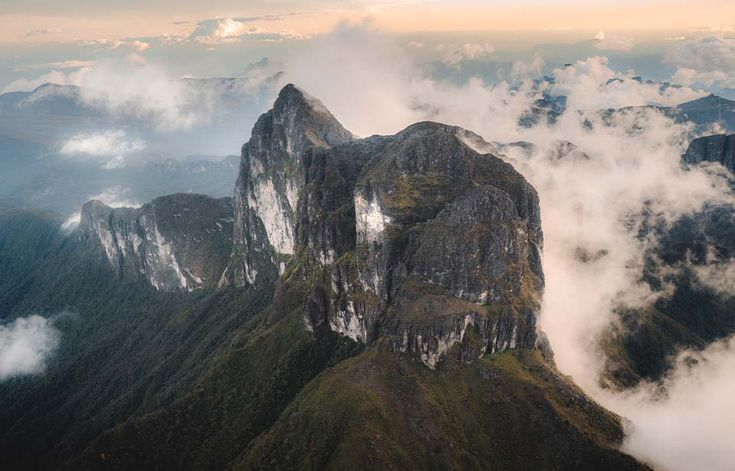
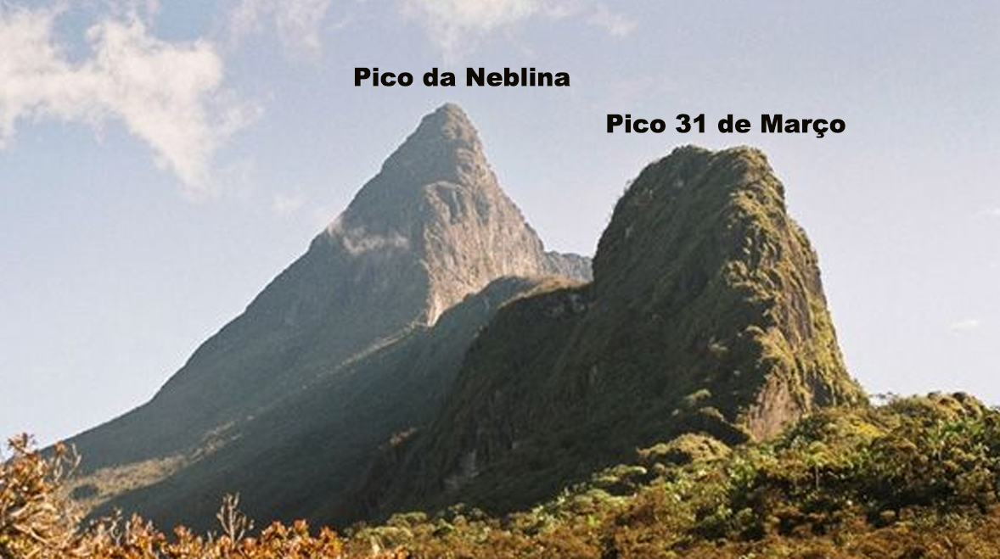
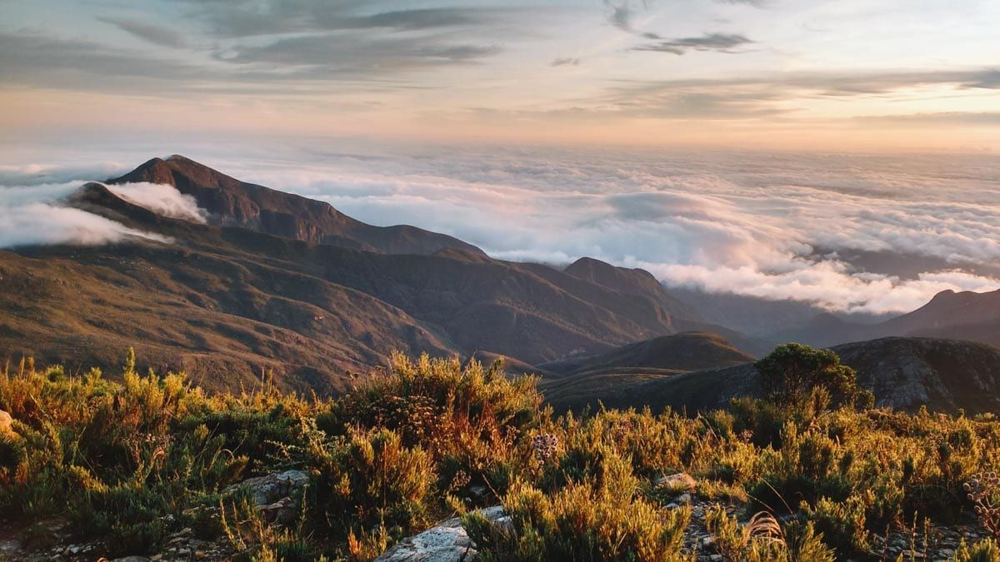
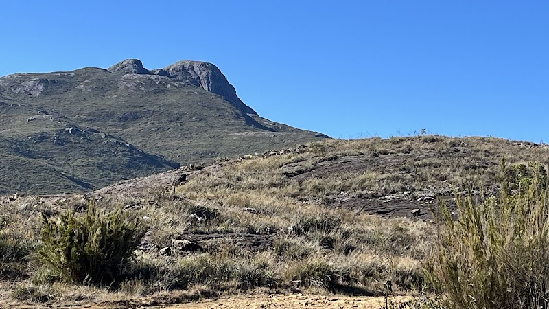
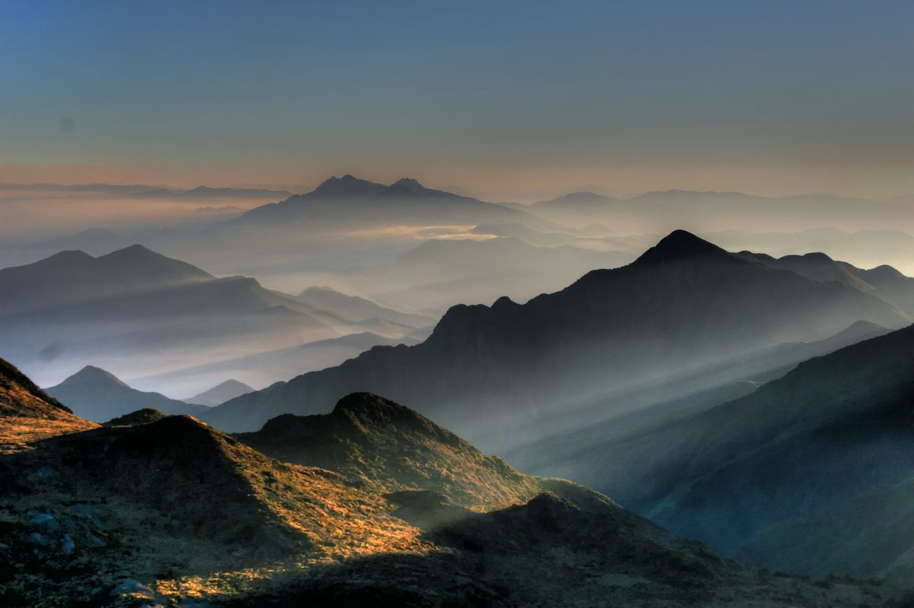
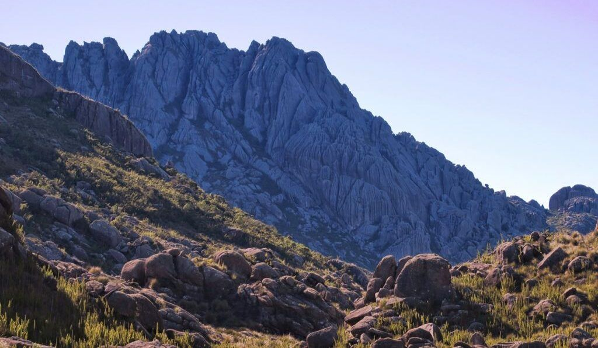
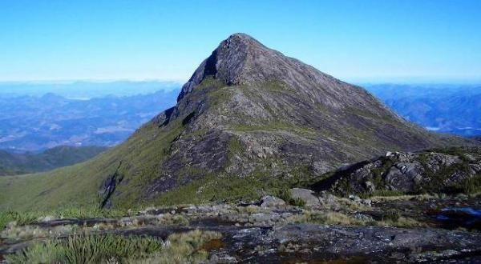

Sobre
O Brasil é conhecido pelas praias e pela floresta, mas escondido no relevo do país existe outro tipo de destino: as trilhas de montanha. Nos últimos anos, o turismo de montanhismo tem ganhado cada vez mais espaço entre viajantes que buscam desafio físico, contato com a natureza e paisagens que só se veem lá do alto. Este site apresenta os 7 pontos mais altos do Brasil — desde o topo absoluto, escondido na Floresta Amazônica, até os picos históricos da Serra da Mantiqueira e do Parque Nacional do Caparaó. Cada um deles tem uma trilha própria, com seu grau de dificuldade, exigências de preparo físico e histórias que atravessam gerações de montanhistas. Conheça a altitude, a localização e as curiosidades de cada um desses gigantes naturais brasileiros.
Os 7 picos mais altos do Brasil
1. Pico da Neblina
2.995 m
Amazonas
O ponto mais alto do Brasil fica na Serra do Imeri, dentro do Parque Nacional do Pico da Neblina, bem na fronteira com a Venezuela. Como a região é uma reserva ambiental protegida, subir até o topo exige autorização prévia. O nome do pico vem da neblina densa que costuma cobrir o cume durante boa parte do ano, criando um cenário quase surreal em meio à Floresta Amazônica. A trilha é uma das mais difíceis do país, com vários dias de caminhada por mata fechada e alta umidade.
2. Pico 31 de Março
2.974 m
Amazonas
Segundo ponto mais alto do Brasil, fica a pouco mais de 600 metros de distância do Pico da Neblina, na mesma cadeia montanhosa da Serra do Imeri, também na fronteira com a Venezuela. Por isso, é comum que os dois picos sejam escalados na mesma expedição. Também conhecido por outro nome entre montanhistas, tem acesso restrito e exige autorização especial para visitação, já que está em território indígena protegido por lei.
3. Pico da Bandeira
2.892 m
Espírito Santo / Minas Gerais
Ponto mais alto da região Sudeste, está localizado na Serra do Caparaó, na divisa entre Minas Gerais e Espírito Santo, e tem uma das trilhas mais acessíveis entre os grandes picos brasileiros — atraindo desde iniciantes até montanhistas experientes. Sua altitude foi medida ainda no início do século 20, época em que chegou a ser considerado o ponto mais alto de todo o país. O nome é uma homenagem a Dom Pedro II, que teria ordenado que a bandeira do Império fosse fincada no topo. O nascer do sol visto de lá é uma das grandes atrações de quem faz a trilha.
4. Pico do Calçado
2.849 m
Espírito Santo / Minas Gerais
Também dentro do Parque Nacional do Caparaó, é um dos cinco picos mais altos do Brasil concentrados nessa mesma região. Por ficar ao lado do Pico da Bandeira, é comum ser incluído no mesmo roteiro de trilha por quem já está na área — uma boa opção para quem quer conhecer mais de um pico na mesma viagem.
5. Pedra da Mina
2.798 m
São Paulo / Minas Gerais
Um dos cumes mais desafiadores da Serra da Mantiqueira, fica bem na divisa entre São Paulo e Minas Gerais. A trilha costuma ser feita em dois dias, com um desnível de cerca de 1.400 metros e quedas bruscas de temperatura durante a noite. É um destino clássico para quem busca uma experiência de montanhismo mais intensa e menos turística que os picos do Caparaó.
6. Pico das Agulhas Negras
2.790 m
Rio de Janeiro
Um dos principais cartões-postais do Parque Nacional do Itatiaia, deve seu nome ao formato escuro e pontiagudo da rocha no topo — um dos cenários mais fotografados entre os picos brasileiros. O acesso inicial é relativamente curto, mas a subida final ao cume exige técnica de escalada e bom preparo físico. No inverno, as temperaturas no topo podem ficar negativas.
7. Pico do Cristal
2.770 m
Minas Gerais
Fecha a lista dentro do Parque Nacional do Caparaó, sendo o único entre os grandes picos da região que fica inteiramente em solo mineiro. Um pouco menos conhecido que seus vizinhos Bandeira e Calçado, costuma atrair principalmente montanhistas que já exploraram os picos mais populares da área e querem completar o roteiro completo do parque.
Galeria de Fotos
1. Pico da Neblina

2. Pico 31 de Março

3. Pico da Bandeira

4. Pico do Calçado

5. Pedra da Mina

6. Pico das Agulhas Negras

7. Pico do Cristal
